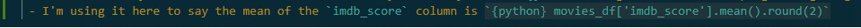

Session 2.2
Saving and analysing data
Welcome back!!
- Welcome back!!
- In the last few sessions we’ve been getting you up to speed with the basics of python and
pandas - We’ve covered a lot of ground, but we’ve also been trying to keep it simple.
- Data types like:
int,float,str,boollist,tuple,dictpathlib.Path,pandas.DataFrame
- functions, methods, and attributes
forloops
- Data types like:
Pandas recap
- We’ve also been introducing you to the
pandasmodule - We’ve shown you how to create
DataFramesfrom scratch - How to
readin data from.csvand.xlsxfilespd.read_csv(),pd.read_excel()
- We’ve shown you how to
cleanyour datadf.dropna(),df.replace()
- We’ve shown you how to
examineyour datadf.head(),df.tail(),df[column].value_counts(),df.columns
- We’ve shown you how to
sliceyour datadf.iloc[],df.loc[],df[]df[df['column'] == 'value']
Pandas recap
- The next thing for you to do is practice ‘recalling’ this stuff so…
It’s time for a quiz!
- You know where to go!
- You know they’re not graded
Set up for the session
- This session we’re going to ‘finish’ up the introductory python part of these workshops by generating some descriptive statistics, simple plots, and saving output.
- But first things first - we need to import the modules we’ll need for this session
Set up for the session
- Excellent! Modules imported and now we need some data.
- Let’s go through the cell below to create the
movies_dfso that we have some data to work with.
Set up for the session
# initialise some list objects that contains our data, this could also be a list of lists, or a dict of lists for example
director = ['John Carpenter', '', 'Nicolas Winding Refn', 'Matthijs van Heijningen', 'Damien Chazelle', 'Dennis Villanueve', 'Coen Brothers', 'Kelly Asbury', 'Edgar Wright', 'Coen Brothers']
names = ['The Thing', 'Blade Runner 2049', 'Drive', 'The Thing', 'Whiplash', 'Arrival', 'No Country for Old Men', 'Shrek 2', 'Hot Fuzz', 'Fargo']
genre = ['Horror', 'Sci-Fi', 'Action', 'Horror', 'Drama', 'Sci-Fi', 'Drama', 'Comedy', 'Comedy', 'Dark Comedy']
year = ['1982', '2017', '2011', '2011', '2014', '2016', '2007', '2004', '2007', '1996']
imdb_score = [82, 80, 78, 62, np.nan, 79, 82, 73, 78, 81]
rt_critics = [82, 88, 93, 34, np.nan, 94, 93, 89, 91, 94]
rt_fans = [92.0, 79.0, 42.0, 82.0, 86.0, 69.0, 89.0, 93.0, 94.0, 79.0]
lead = ['male', 'Male', 'm', 'Female', 'm', 'Male', 'fem', 'Orgre', 'Male', 'Male']
#turning those lists into a dataframe
movies_df = pd.DataFrame(# opening brackets but moving to new line for readability, note the uppercase D and F in the call
list(zip(director, names, genre, year, imdb_score, rt_critics, rt_fans, lead)), #first argument note the comma at the end of it, this is a couple of nested functions
columns = ['Director', 'Movie Title', 'Genre', 'Year of Release', 'ImdB Score', 'Rotten Tomatoes Score','Rotten Tomatoes Fan Score', 'Gender of Lead']# second argument , passing a list to the columns arguments
)# closing the first pair of brackets to complete the function call
movies_df.to_csv('movies_df_2_2.csv', index=False)#saving the dataframe to a csv file
movies_df.columns = [i.lower().replace(' ', '_') for i in movies_df.columns] #capitalising the column names
# cleaning the data a little.
movies_df = movies_df.replace(r'^\s*$', np.nan, regex=True).dropna().reset_index(drop=True) #
#notice how we've 'chained' a bunch of methods together to make all empty cells appear as 'np.nan', then dropping all 'nan' cells then resetting the index
#that one line of code! Imagine if it was a huge data set
movies_df.iloc[:, -1:] = movies_df.iloc[:, -1:].replace(to_replace = ["m"], value = "Male") #Fixing the male values
movies_df.iloc[:, -1:] = movies_df.iloc[:, -1:].replace(to_replace = ["fem"], value = "Female") # fixing the female values
movies_df['gender_of_lead'] = movies_df['gender_of_lead'].str.title()ph1
Index(['director', 'movie_title', 'genre', 'year_of_release', 'imdb_score',
'rotten_tomatoes_score', 'rotten_tomatoes_fan_score', 'gender_of_lead'],
dtype='object')Set up for the session
- You can download the data (movies_df_2_2.csv) from Brightspace
- Use the
pd.read_csv()method to import the data into a newDataFramecalledmovies_df - Take your time and call me if you get stuck.
- Once you have the data imported, take a look at the
headof the data to make sure it’s all there. - Check the
df.shape attributeof the data to see how many rows and columns you have. - Use a for loop to print out the
columnsof the data. - From your previous notebook you should have some examples of how to clean the data
replaceany missing values withnp.nanand thendropany rows that containnp.nanvalues.- fix and inconsistencies in the data entries with
value_counts()andreplace() - Finally,
resetthe index of the dataframe so that it starts at 0.
Saving stuff
- One of the key things we might want to do is save things.
- You might want to save clean data once you’ve made it.
- In this case I’ve made the dataset somewhat from scratch and maybe I want to be able to save it so that we can send it onto other researchers,
- Or maybe you have done lots of work cleaning a data set and you want to save it so that you can analyse it later.
- You might have made a table, or a chart, or a plot that you want to save so that you can use it in a report or a presentation.
Saving data
- Saving your data is a good idea
- Fortunately the syntax for saving a dataframe is, at the heart of it, really easy.
Saving data
- So above, we have two examples of saving a
pandas DataFrame, one to a.csvfile and one to a.xlsxfile. Let’s just take a second and walk through the actual syntax we used above.- The first thing we do is call the
variablewe want to work on, in this case using the name of our dataframe - We follow this with a fullstop
.because saving a file ismethod - This is followed by
to_and then the type of file we’re exporting to, soto_csvfor csvs orto_excel - Then we open brackets
()and we pass thepathto where we want the file to live A. This can be anr-stringB. Or it can be apl.Path()object
- The first thing we do is call the
- But it has to end in
\filename.filetype(the filetype is the.csvor.xlsx, also called thesuffixof the file)
Using an r-string or a Path is often a matter of personal preference, but we would encourage you to work with Path objects more often because they can be a lot more flexible. Let’s take an aside for a few minutes and look at what we can do with Paths to make our lives easier.
Path components
- Just like a
DataFramehasattributeslike.columnsand.shape - A
Pathobject also has attributes that can be useful, and these attributes are basically just the components of a file path. - These
attributesallow us to pick apart apathso that we can use the bits of it we need. - To get a sense of this, in the cell below we’ll create a
Pathto thecsv
.name
- The first attribute we’re going to look at is the
nameattribute of aPathobject. - This is the name of the file or folder that the
pathpoints to including the filesuffix. - This is useful because it allows us to get the name of the file or folder without having to parse the
pathstring.
stem and suffix
- The
nameattribute is useful, but sometimes we want to get thestemof the file (the name without thesuffix) or thesuffixof the file (the.csvor.xlsxat the end of the name) - Like if we specficially want to find files with the same
stembut differentsuffixesor if we want to save a new file with the samestembut a differentsuffix.
stem and suffix
- Boom.
- You’ll notice that the filename also has the
.csvsuffix. - Obviously if it was an excel workbook the extension would be
.xlsxand if it was a jupyter notebook it would be.ipynb. - All of these
attributesreturnstringsthat you can perform all the usualstring operationson, and we know how much you love those (honestly, it’s endearing). - So you can call
csv_file.stem.upper()and it will return thestemof the file in uppercase. - Or you can call
csv_file.suffix.replace('.', '')and it will return thesuffixof the file without the.at the start.
parent
- The
parentattribute of aPathis thefolderone level up from the file or folder that thepathpoints to. - So if the full
pathisC:\Users\username\Documents\programming_club\data\movies_df_2_2.csv
- Then the
parentof thepathisC:\Users\username\Documents\programming_club\data
paths and saving
- Now that we know about some of these
attributeswe can use them to make our lives a little easier when we’re saving files. - For example, we can use the
pathwe saved to thecsvfile to save a new file in the same folder as thecsvfile without overwriting our old file. - We just need to use the parent of the
pathand add a new.name(which includes withsuffix). Pathlibis really good at this because it allows us to use/(forwardslash) to join astringonto the end of aPathobject.
paths and saving
- Or what if you wanted to save it into a another folder in the same project directory?
- You could use the
parentof theparent!!
paths and saving
- There’s lots you can do with
pathliband we’ve only just scratched the surface. - My favourite is to use the
pathlib.iterdir()method toloopthrough all the files in a folder and do something with them. [i for i in csv_file.parent.iterdir()]will return a list of all the files in the folder that thecsv_fileis in.- But thats a story for another day.
Saving data
- Your next task is to save the ‘cleaned’
movies_dfto a newcsvfile so that you don’t lose all the hard work you’ve done cleaning it up. - I suggest you save it to a csv with the
df.to_csv()method. - Pass the
pathbetween the brackets and make sure you setindex = Falseso that theindexof thedfdoesn’t show up as a column in the exportedcsvfile. - Be really careful with the
pathyou pass to theto_csv()method, you don’t want to overwrite your original data (this is where thepathlibattributescan be really useful). - But if you do overwrite your original data, don’t worry, you can always download the file again, but that not always be true of the data you’re working with.
Descriptive statistics
- Now that we’ve saved our data, we can start to look at some of the
descriptive statisticsof the data. - You all know well what descriptive stats are, you’ve made lots of tables in your time, but we’re going to look at how to do this in
pandas. - We can look at things like the
mean,median,mode,standard deviation,variance,range,quartiles, andpercentilesof the data. - We can use the
df.describe()method to get a summary of the data in theDataFrame(and with quarto we can render them in apa, but thats for later)
Descriptive statistics
- The
df.describe()method is a really useful method for getting a summary of the data in aDataFrame. - It can be called on a whole
DataFrameor on a singlecolumnof aDataFrame. - It returns a
DataFramewith themean,standard deviation,min,max,quartiles, andcountof the data in theDataFrame. - Think about how useful that is for a second.
.describe()
- Let’s take a look at the
describe()method in action.
| imdb_score | rotten_tomatoes_score | rotten_tomatoes_fan_score | |
|---|---|---|---|
| count | 8.000000 | 8.000000 | 8.000000 |
| mean | 76.875000 | 83.750000 | 80.000000 |
| std | 6.685539 | 20.492159 | 17.566201 |
| min | 62.000000 | 34.000000 | 42.000000 |
| 25% | 76.750000 | 87.250000 | 76.500000 |
| 50% | 78.500000 | 92.000000 | 85.500000 |
| 75% | 81.250000 | 93.250000 | 92.250000 |
| max | 82.000000 | 94.000000 | 94.000000 |
.describe()
- So you can see that the
describe()method returns aDataFramewith the majordescriptive statisticsfor thenumbericalcolumns in theDataFrame. - It’s really easy to clean this up and make it look nice.
desc.columns = [i.replace('_', ' ').title() for i in desc.columns]#cleaning up the column names
desc.index = [i.title() for i in desc.index]#cleaning up the index
desc.round(2)#rounding the numbers to 2 decimal places| Imdb Score | Rotten Tomatoes Score | Rotten Tomatoes Fan Score | |
|---|---|---|---|
| Count | 8.00 | 8.00 | 8.00 |
| Mean | 76.88 | 83.75 | 80.00 |
| Std | 6.69 | 20.49 | 17.57 |
| Min | 62.00 | 34.00 | 42.00 |
| 25% | 76.75 | 87.25 | 76.50 |
| 50% | 78.50 | 92.00 | 85.50 |
| 75% | 81.25 | 93.25 | 92.25 |
| Max | 82.00 | 94.00 | 94.00 |
.describe()
- We can also just slice the
DataFramereturned by thedescribe()method to get specific stats
.describe()
- We can also call the
describe()method on a singlecolumnof aDataFrameto get thedescriptive statisticsfor thatcolumn.
.describe()
- The
describe()method is really useful for getting a quick summary of the data in aDataFrame. - But what if we want to get the
modeof the data? - Or the
quartilesof the data? - Or the
percentilesof the data? - We can use the
df.mode(),df.min(),df.max(),df.quantile(), anddf.percentile()methods to get these stats. - Let’s take a look at these in action.
other stats
- Just like
.describe()we can call these methods on a wholeDataFrameor on a singlecolumnof aDataFrame. - But we need to specify only numberical columns when we call these methods on a whole
DataFrame.
other stats
- We can use that
syntaxfor any individual descriptive stat we might want - so
.quantile(),.percentile(),.std(),.var(),.mean(),.median(),.mode(),.min(),.max()
other stats
- So you can see that we can get a lot of
descriptive statisticsfrom aDataFramereally easily. - As an academic writer you can then use these in lots of ways.
- You can not only make tables of these stats, but you can also use them in your writing to describe the data you’re working with.
- This is a quarto feature rather than a python feature but you can use
inline code
inline code
- the syntax for this is to use `
{python} df[column].mean()` and then you can use thequartoapastyle to render the output inapastyle. - for
Rthe syntax is `{r} mean(df$column)` - in both cases you need the backtik ‘`’ followed by the curly braces
{}containing the name of the programming language you’re using and then the code you want to run. - I’m using it here to say the mean of the
imdb_scorecolumn is 76.88

plots
- plotting is a whole thing in python and R.
- There are genuinely amazing libraries for plotting in both languages.
- And entire books on the subject.
- But we’re going to keep it simple and just show you how to make a few basic plots in
pandas.
plots
- the main plotting library in python is called
matplotliband it’s really powerful. - it has approximately 1 gajillion different ways to plot data…. which is …great… but also a bit overwhelming.
pandashas aplot()method that is built on top ofmatplotliband makes it really easy to make simple plots.- We can use the
plot()method to makeline,bar,scatter,hist,box,density,area,pie,hexbin, andkdeplots. - We can also use the
plot()method to makesubplotsandstackedplots. - Let’s take a look at a
histplot of theimdb_scorecolumn.
plots
- The
plot()method is really easy to use. - We just call the
plot()method on aDataFrameor acolumnand pass thekindof plot we want to make. - We can also pass a bunch of other
argumentsto theplot()method to customise the plot. - Let’s take a look at a
histplot of theimdb_scorecolumn.

plots
- Ok… that wasn’t a great plot.
- There isn’t enough data… but you can see that the
plot()method is really easy to use.
- We can also make a
barplot showing themeanof theimdb_scorefor eachgenrein theDataFrame.

plots
movies_df.groupby('genre')['imdb_score'].mean().plot(kind = 'bar', title = 'Mean Imdb Score by Genre')- Let’s walk through this code a little bit.
- We’re calling the
groupby()method on theDataFrameand passing thecolumnwe want to group by. - We then pass the
columnwe want to get themeanof. - We’re then calling the
mean()method on thecolumnwe want to get themeanof. - We’re then calling the
plot()method on themeanobject and passing thekindof plot we want to make. - We’re also passing a
titleto theplot()method to give the plot a title.
- We’re calling the
- All as one line of code.
plots
- We can also make a
scatterplot of theimdb_scoreandrotten_tomatoes_scorecolumns.

plots
- As you can see, the plot method is really easy to use.
- There’s loads of options though and you won’t remember them all.
- The
bar,scatter, andhistplots are the most common plots you’ll use - Because we generally use them to inspect the data as part of the prep and preliminary analysis of the data.
- If you need a specific plot there are literally 1000s of online video and written tutorials on how to make them.
- Also, if you learn how to make a plot in
matplotlibyou will be really really employable, way beyond academia.
Saving plots
- Just like we can save a
DataFrameto acsvorxlsxfile, we can also save a plot to apngorpdffile. - We can use the
savefig()method to save a plot to a file. - We just pass the
pathto thesavefig()method and it will save the plot to thatpath. - Let’s take a look at how to save the
scatterplot we just made.
Saving plots
- The
savefig()method is really easy to use but we have to call it after another method for it to work. - We need to call the
get_figure()method on the plot to make it into afigureobject. - We can then call the
savefig()method on thefigureobject and pass thepathto thesavefig()method.
plots practice
- In your own notebook you should:
- Make a
barplot of themeanof theimdb_scorefor eachgender of leadin theDataFrame.df.groupby('column')['column'].mean().plot(kind = 'bar', title = 'Mean of column by column')
- Make a
scatterplot of therotten_tomatoes_scoreandrotten_tomatoes_fan_scorecolumns.df.plot(kind = 'scatter', x = 'column', y = 'column', title = 'column vs column')
- Save both of them into the parent folder of the
csvfile you imported earlier.plot.get_figure().savefig(csv_file.parent / 'plot.png')
- Then make a table of the descrtiptives of the
DataFrameand save it to acsvfile.df.describe().to_csv(csv_file.parent / 'name_of_file.csv')
plots practice

but what if
- When we’re working with data we often want to do something
ifa certain condition is met. - For example, if the mean, the median, and the mode of a column are all the same then we might use that as one of the tests for normality.
- We can use the
if-elif-elsestatement to do this. - These are really simple, but really powerful tools for controlling the flow of a program.
if statements
- The
ifstatement is the most basic of theif-elif-elsestatements. - It allows us to execute a block of code if a certain condition is met.
- The syntax is really simple.
- We use the
ifkeyword followed by the condition we want to test (using thebooleanopperators that we covered previously). - We then open a block of code with a colon
:and indent the code we want to execute if the condition is met. - Let’s look at a simple example.
if statements
- We can use if statements to test lots of things.
- For example, we can test if the mean of a column is equal to the median of a column.
if movies_df['imdb_score'].mean() == movies_df['imdb_score'].median():
print('The mean and median of the imdb_score column are the same')
else:
print('The mean and median of the imdb_score column are not the same')The mean and median of the imdb_score column are not the same- We can use if statements to test lots of things.
- For example, we can test if the mean of a column is equal to the median of a column.
Well if the mean and the median are the same then the data is more likely to be normal.
if-elif-else statements
- The
if-elif-elsestatement is a more complex version of theifstatement. - It allows us to test multiple conditions and execute different code depending on which condition is met.
- The syntax is not much more complex than the
ifstatement.
pandas and if-elif-else
- We could use some
iflogic to do other things with theDataFrame - For example, we could use
iflogic to check thedtype(which is an attribute) of a column and then do something depending on thedtype. - if the
dtypeisfloat64we coulddescribe()the column, if it’sobjectwe couldvalue_counts()the column, if it’sint64we couldplot()the column.
if movies_df['imdb_score'].dtype == 'float64':
print(movies_df['imdb_score'].describe())
elif movies_df['imdb_score'].dtype == 'object':
print(movies_df['imdb_score'].value_counts())
else:
movies_df['imdb_score'].plot(kind = 'hist')count 8.000000
mean 76.875000
std 6.685539
min 62.000000
25% 76.750000
50% 78.500000
75% 81.250000
max 82.000000
Name: imdb_score, dtype: float64if-elif-else practice
- In your own notebook you should:
- Use an
if-elif-elsestatement to check if themeanof theimdb_scorecolumn is greater than themedianof theimdb_scorecolumn. - If the
meanis greater than themedianthen print ‘The mean is greater than the median’, if not then print ‘The mean is not greater than the median’. - Use an
if-elif-elsestatement to check if thedtypeof theimdb_scorecolumn isfloat64,object, orint64. - If the
dtypeisfloat64thendescribe()the column, if it’sobjectthenvalue_counts()the column, if it’sint64thenplot()the column.
simple analysis
- While there are a lot of powerful python tools for doing quite complex analyses in python, these involve using other
packageslikescipyandpingouin. - To do a
t-testfor example we would use thettest_ind()method from thescipy.statsmodule. - To ‘finish’ this session we’re just going to look at how you can use the
corr()method to get thecorrelationbetweencolumnsin a `DataFrame.
correlations
- Correlations are really easy to do in
pandas. - We can use the
corr()method to get thecorrelationbetweencolumnsin aDataFrame. - We can specify the
methodofcorrelationwe want to use by passing themethodto thecorr()method. - We can use the
pearson,kendall, andspearmanmethods ofcorrelation. - We have to specify
numeric_only = Truewhen we call thecorr()method to get thecorrelationbetweennumericcolumns.
correlations
- You’ll notice that the
corr()method returns aDataFramewith thecorrelationbetween thenumericcolumnsin theDataFrame. - We can also check for
specificcorrelationsby combining slicing and thecorr()method. - As if we just wanted to see if the Rotten tomatoes score and the Rotten tomatoes fan score were correlated we could do this.
correlations
- We can also use the
corr()method to get thecorrelationbetween acolumnand some number of other columns - If we wanted to store the
correlationbetween the two differentrotten tomatoesscores we could do this.
correlation = movies_df['rotten_tomatoes_score'].corr(movies_df['rotten_tomatoes_fan_score'], method = 'pearson')
if correlation > 0.3:
print(f'The Rotten Tomatoes Score and the Rotten Tomatoes Fan Score are positively correlated, r = {correlation: .2f}')
elif correlation < -0.3:
print(f'The Rotten Tomatoes Score and the Rotten Tomatoes Fan Score are negatively correlated, r = {correlation: .2f}')
else:
print(f'The Rotten Tomatoes Score and the Rotten Tomatoes Fan Score are not correlated, r = {correlation: .2f}')The Rotten Tomatoes Score and the Rotten Tomatoes Fan Score are not correlated, r = -0.14correlations
- So you can see that just using
pandaswe can import our data, clean it, slice it. - We can then do some basic
descriptive statistics, make some simpleplots, and check forcorrelations. - We could also do things like make certain columns into categories, or change the
dtypeof a column, or make a new column based on the values of other columns. - In your own notebook, play around with correalting the
imdb_scorewith therotten_tomatoes_scoreand therotten_tomatoes_fan_scoreand then save thecorrelationto acsvfile. - You could also make a
scatterplot of theimdb_scoreand therotten_tomatoes_scoreand save it to apngfile. - Use an
if-elif-elsestatement to check if thecorrelationbetween theimdb_scoreand therotten_tomatoes_scoreis greater than 0.3, less than -0.3, or between -0.3 and 0.3.
Summary
- We’ve covered a lot in this session.
- We’ve looked at how to save data to a
csvorxlsxfile. - We’ve looked at how to use
pathlibto make working withpathseasier. - We’ve looked at how to get
descriptive statisticsfrom aDataFrame. - We’ve looked at how to make
plotsinpandas. - We’ve looked at how to save
plotsto apngorpdffile. - We’ve looked at how to use
if-elif-elsestatements to control the flow of a program. - We’ve looked at how to use
correlationsto check for relationships betweencolumnsin aDataFrame. - You’ve done a lot of work in this session, and you should be really proud of yourself.